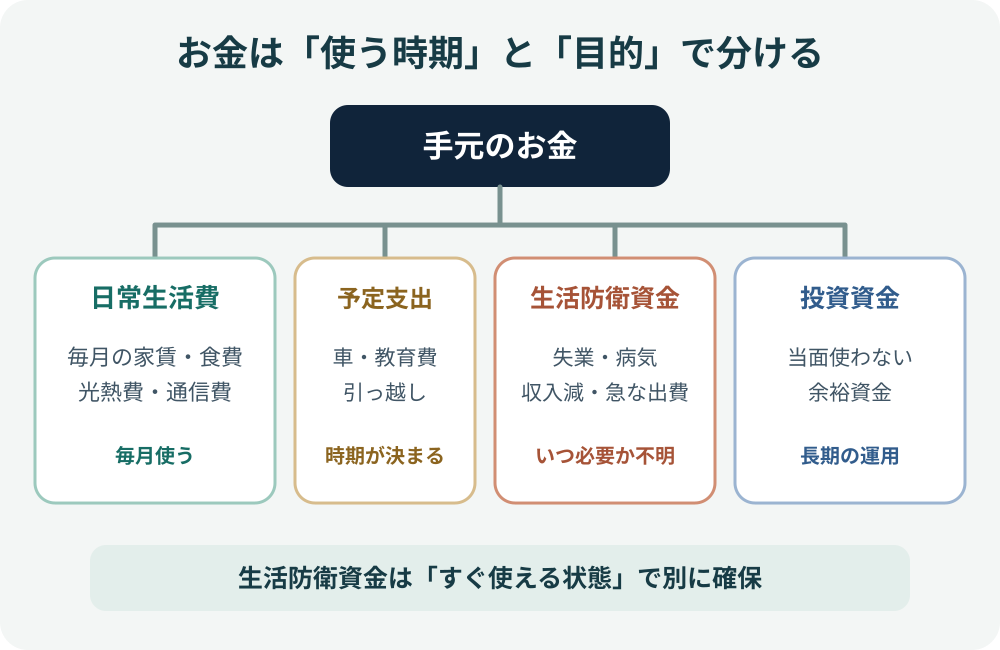
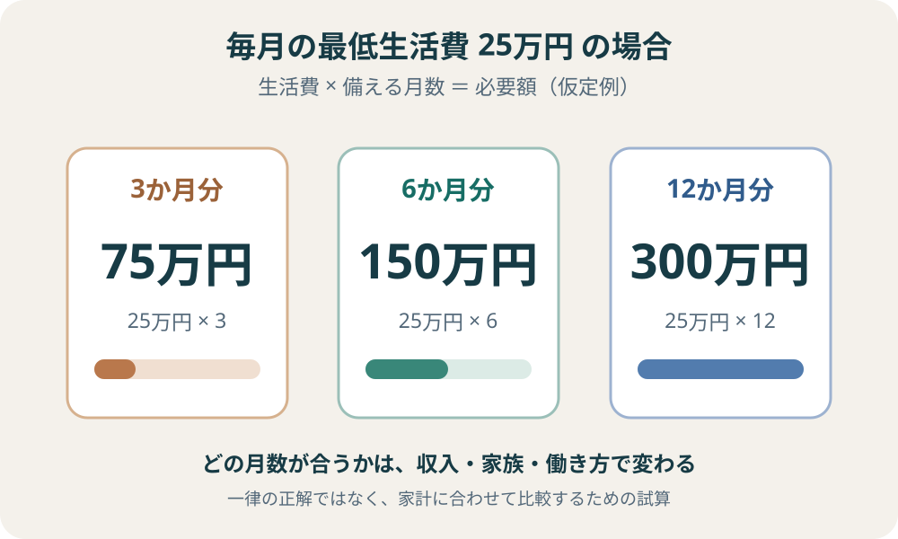

生活防衛資金とは？必要額の計算と備え方
「生活費の何か月分を貯めればいいの？」と迷ったら、まず自分の家計で毎月いくらあれば暮らしを続けられるかを計算します。生活防衛資金に全員共通の正解はありません。毎月の必須支出と、収入が戻るまでに必要になりそうな期間から、自分に合う金額を考えていきましょう。
生活防衛資金は、失業・病気・休業・収入減少などが起きたとき、生活を続けるために使う予備のお金です。必要額は「毎月の最低限の生活費 × 備える月数」を基本に、年払いの支出や急な出費も考慮して決めます。目安の月数を先に決めるのではなく、自分の支出と収入の状況から考えることが大切です。
1. 生活防衛資金とは何か
生活防衛資金とは、収入が途絶えたり大きく減ったりしたときに、家賃・食費・光熱費などの生活に必要な支出をまかなうため、普段の生活費や投資資金とは分けて確保しておくお金です。
たとえば、病気やけがで働けない、勤務先の事情で収入が減る、家族の事情で働き方を変える、災害や故障で急な支出が発生するといった場面で使います。使う時期が予測しにくいため、値上がりを狙う資金ではなく、必要なときにすぐ使えることを重視します。
お金は、使う時期と目的で分けると整理しやすくなります。

生活防衛資金と、数年以内に使う予定が決まっているお金（引っ越し、車の購入、教育費、旅行など）は別に考えます。予定支出まで生活防衛資金に含めると、緊急時に使える金額を見誤るためです。
2. 毎月の最低生活費を計算する
必要額を計算する最初のステップは、普段の支出すべてではなく、収入が減っても当面支払い続ける必要がある金額を把握することです。直近3〜6か月の家計簿や銀行・カードの明細を見ながら、月平均を出してみましょう。
| 支出の種類 | 計算に入れるものの例 | 見直すポイント |
|---|---|---|
| 住居 | 家賃、住宅ローン、管理費、駐車場 | 収入が減ってもすぐにはなくならない固定支出 |
| 食費・日用品 | 自炊中心の食費、洗剤、衛生用品 | 最低限の生活を続ける水準で見積もる |
| 水道光熱・通信 | 電気、ガス、水道、携帯、インターネット | 削減できる契約があっても、必要な基本額は残す |
| 保険・医療 | 保険料、継続的な通院・薬代 | 自己判断で必要な保障や治療を削らない |
| 教育・扶養 | 保育料、学費、子どもの生活費、仕送り | 家族の人数や年齢に応じて計上する |
| 交通・車 | 通勤・通院交通費、車の維持費 | 生活や仕事に必要な範囲を見積もる |
| その他 | 税・社会保険料、最低限必要な会費など | 年払いは12か月で割って月額に加える |
一方、外食・旅行・趣味・衣類の買い替えなど、緊急時に一時的に減らせる支出は、最低生活費から分けて考えます。ただし、家族の健康や生活を維持するために必要な支出まで、無理にゼロにする必要はありません。
自動車税、固定資産税、年払い保険料など、毎月は発生しないけれど毎年必要になる支出は見落としやすい項目です。年間額を12で割って月額に加えるか、別枠の予定支出として確保しましょう。
毎月の最低生活費 ＝ 住居費 ＋ 食費・日用品 ＋ 光熱・通信 ＋ 保険・医療 ＋ 教育・扶養 ＋ 交通・車 ＋ その他の必須支出
金額は手取り収入や平均支出ではなく、収入が減ったときにも必要になる支出を基準にします。
家計調査の平均額を参考にする
自分の生活費がまだ把握できていない場合は、総務省統計局「家計調査」の平均消費支出を、家計を見直す最初の参考値にできます。2025年の1か月平均は、単身世帯が173,042円、総世帯が259,880円、二人以上の世帯が314,001円でした。
| 世帯区分（2025年平均） | 1か月の消費支出 | 6か月分に換算 |
|---|---|---|
| 単身世帯 | 173,042円 | 1,038,252円（約104万円） |
| 総世帯（単身＋二人以上） | 259,880円 | 1,559,280円（約156万円） |
| 二人以上の世帯 | 314,001円 | 1,884,006円（約188万円） |
ただし、これは実際に支払った消費支出の平均であり、生活防衛資金として必要な「最低限の生活費」そのものではありません。平均には世帯人数・年齢・住居形態・地域・生活スタイルの違いが含まれ、旅行や娯楽など緊急時に減らせる支出も含まれます。また、税金や社会保険料などの非消費支出は別区分です。
そのため、平均額をそのまま必要額にするのではなく、自分の家計簿や口座・カード明細を確認し、住居費・食費・光熱費・通信費・医療費など、収入が減っても続く支出に置き換えて計算します。平均より支出が少ない世帯も多い世帯もあります。特に二人以上の世帯の平均は2025年で平均世帯人員2.87人の集計なので、人数や年齢構成が違えば単純比較はできません。
3. 何か月分を備えるか考える
毎月の最低生活費が分かったら、次に「収入が減ってから、家計を立て直すまでにどのくらいかかりそうか」を考えます。必要な月数は、雇用形態、収入源の数、家族構成、再就職や仕事再開の見通し、利用できる公的給付や保障などで変わります。
3か月・6か月・12か月といった期間は、必要額を比較するための試算パターンとして使えます。ただし、これらは全員に当てはまる公的な一律基準ではありません。自分の家計で、どのくらいの期間を自力で支える必要があるかを考えるための目盛りです。
| 考える条件 | 備えを厚めに検討する状況 | 確認したいこと |
|---|---|---|
| 収入の安定性 | 歩合・事業収入が中心、契約更新に左右される、収入変動が大きい | 収入が減った場合に、通常の水準へ戻るまでの期間 |
| 収入源の数 | 家計を支える人が一人だけ、収入源が一つに集中している | もう一方の収入だけで必須支出を払えるか |
| 扶養する家族 | 子ども、介護が必要な家族など、支出を急に減らしにくい | 人数・年齢・継続して必要な費用 |
| 働き方・再開の見通し | 自営業・フリーランス、休業時に売上が止まりやすい | 仕事再開までの準備期間や売上回復の見通し |
| 保障・支援 | 給付の対象外、給付まで時間がかかる、保障額が不足する | 対象条件・支給時期・金額を確認し、過大に当てにしない |
会社員であっても、必ず少額でよいとは限りません。逆に、自営業だから必ず1年分必要とも限りません。毎月の支出が小さく、複数の安定した収入源がある家庭と、支出が大きく一人の収入に頼る家庭では、必要な備えは異なります。
4. 必要額を具体例で試算する
毎月の最低生活費を25万円と仮定した場合、期間ごとの金額は次のようになります。これは計算方法を示すための仮定例で、全員に推奨する金額ではありません。

| 備える期間 | 計算 | 必要額の目安 |
|---|---|---|
| 3か月 | 25万円 × 3 | 75万円 |
| 6か月 | 25万円 × 6 | 150万円 |
| 12か月 | 25万円 × 12 | 300万円 |
この金額に、緊急時に発生しそうな一時費用や、毎月の計算に含めていない年払い支出を加えるか検討します。反対に、収入が減っても継続して入ることが確認できる収入や給付がある場合は、家計の不足額を別途試算できます。ただし、受給条件や開始時期が不確かな給付を、最初から確実な収入として差し引かないようにしましょう。
実際の計画では「最低生活費25万円だから150万円」と機械的に決めるのではなく、収入が止まる可能性、家族の生活、仕事を再開するまでの時間を考えて、3・6・12か月など複数のケースを比べます。
5. 家族構成・働き方で調整する
会社員・公務員など、給与収入が中心の場合
給与が比較的安定していても、勤務先の制度、休業時の収入、雇用の状況、家計を支える人の数を確認します。失業給付や傷病手当金などの制度が関係する場合もありますが、対象条件や支給開始までの期間、支給額は状況によって異なります。制度があるという理由だけで、手元資金を少なく見積もらないようにしましょう。
自営業・フリーランス・収入変動が大きい場合
売上が落ちたときに事業収入がどの程度減るか、仕事を再開するまでに何か月かかるか、事業用の資金と家計用の資金を分けられているかを確認します。事業の運転資金は生活防衛資金とは別に管理し、同じお金を両方に数えないことが重要です。
共働き・扶養家族がいる場合
一方の収入が止まったとき、もう一方の手取り収入だけで必須支出をどこまで賄えるかを計算します。子どもや介護家族がいる場合、支出を短期間で減らしにくいこともあります。家計全体の不足額と、収入が戻るまでの期間を組み合わせて考えましょう。
住宅ローンや借入がある場合
住宅ローンや返済など、収入が減っても続く支払いを最低生活費に含めます。カードローンやリボ払いなど金利の高い借入がある場合は、投資との優先順位を含めて家計全体を見直します。返済を急ぐことで手元資金がなくなり、再び借入が必要になる状況も避けたいところです。
6. どこに置いておくか
生活防衛資金は、利回りよりも「必要なときに、値下がりを気にせず、すぐに使えること」を優先します。日常の決済口座とは分けた普通預金など、残高を把握しやすく、必要なときに引き出せる預貯金が基本的な置き場所になります。
- 預貯金：価格変動が小さく、必要時に使いやすい。生活防衛資金の中心にする。
- 株式・投資信託：必要な時期に値下がりしている可能性があり、売却・受渡しにも時間がかかるため、生活防衛資金の置き場所には向かない。
- 長期の定期預金など：中途解約の条件や手続き、資金を動かせるまでの時間を確認する。すぐ使う部分をすべて固定しない。
防衛資金を一つの口座にまとめるか、日常用と緊急用に分けるかは管理しやすさで決めます。大切なのは、投資用口座の残高や、すぐに現金化できない資産を生活防衛資金に含めないことです。
7. まだ貯まっていない場合の進め方
必要額が大きく、すぐには用意できない場合でも、最初から目標額すべてを貯める必要はありません。生活を守るための現金を少しずつ増やし、家計の状態に合わせて投資との配分を見直します。
- 毎月の収支を把握する：固定費・変動費・年払い支出を分け、毎月いくら残せるかを確認する。
- 最初の小さな予備費をつくる：急な修理や医療費など、よくある突発支出に対応できる現金を先に確保する。
- 目標額を段階に分ける：まず1か月分、次に3か月分、その後に家計に応じた目標へと積み上げる。
- 自動で積み立てる：給料日後に無理のない金額を別口座へ移し、残りで生活する仕組みをつくる。
- 状況が変わったら見直す：転職、独立、結婚、出産、住宅購入、介護などの変化に合わせて必要額を再計算する。
貯蓄が少ない時期は、投資額を増やすことより、急な支出で借入や投資商品の売却を迫られない家計づくりを優先する考え方があります。一方、家計や収入、保障、負債の状況は人によって違うため、「生活防衛資金が目標額に達するまで、誰も投資してはいけない」という一律のルールではありません。まず生活を維持できる最低限の現金を確保し、投資額は無理のない範囲で判断しましょう。
\n生活防衛資金の確認チェックリスト
- 毎月の最低限の生活費を、実際の支出から計算した
- 年払いの税金・保険料など、毎月以外の支出も確認した
- 近い将来に使う予定のお金を、生活防衛資金と分けた
- 収入が減ったときに、家計を支える収入源がいくつあるか確認した
- 家族構成・働き方・再就職や仕事再開までの期間を考えた
- 3・6・12か月など複数の試算を比べ、自分の目標額を決めた
- 必要なときにすぐ使える預貯金として管理している
まとめ：月数ではなく、家計から必要額を決める
生活防衛資金は、収入が減ったときも暮らしを続けるための予備資金です。まず最低限の生活費を計算し、収入の安定性・収入源の数・家族構成・働き方・利用できる保障を踏まえて、何か月分を備えるか決めます。
「生活費の6か月分」といった数字だけを覚えるのではなく、自分の家計なら何か月あれば立て直せるかを考えることが重要です。必要額は人生の変化に合わせて見直し、投資資金とは役割を分けて管理しましょう。
生活資金を整理したら、投資を始める前に確認したい7項目を見直してみましょう。
公式情報・参考資料
- 金融庁：資産形成の基本 — 家計管理、ライフプランニング、貯蓄と投資の使い分け、金融商品の安全性・収益性・流動性。
- 政府広報オンライン：社会人として知っておきたいお金の話 — 支出の把握、支出の優先順位、お金を日常生活・近い将来・当面使わない資金に分ける考え方。
- 日本FP協会：パーソナルファイナンス教育用テキスト — ライフプランと緊急時の備えを考えるための教材。